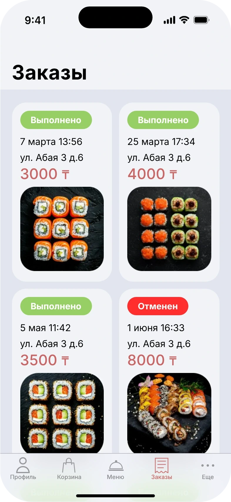

Ресторанное приложение
Доставка суши: быстрый заказ, понятный трекинг и UX-аудит референса.
- Платформа
- iOS, 393×852
- Инструменты
- Figma
- Роль
- UX/UI: User Flow, UX-аудит, UI Kit
- Объём
- 25+ экранов и компоненты
Задача
Спроектировать мобильное приложение для доставки суши с быстрым заказом и понятным трекингом. Дополнительно — провести UX-аудит существующего референса и показать, как улучшить пользовательский опыт.
Ключевые экраны



UX-аудит референса
Сравнил «было» и «стало» и обосновал решения по четырём пунктам: модалка при входе, акцентный цвет, навигация и экран «Ещё». Подробный разбор — в Figma.
Проработанные состояния
- Скелетоны при загрузке
- Ошибка сети
- Пустая корзина
- Промокод: три состояния
- Трекинг: четыре этапа
Схема переходов

Нажмите на схему, чтобы открыть её крупно. Файл в Figma
Цель и как проверил бы
Цель. заказ от выбора блюда до подтверждения за минимум шагов, трекинг без вопроса «где мой заказ»
Метрики успеха. время до оформления, доля брошенных корзин, число обращений «где заказ»
Как проверил бы. тест на 5 пользователях: «закажи сет с промокодом и отследи доставку»